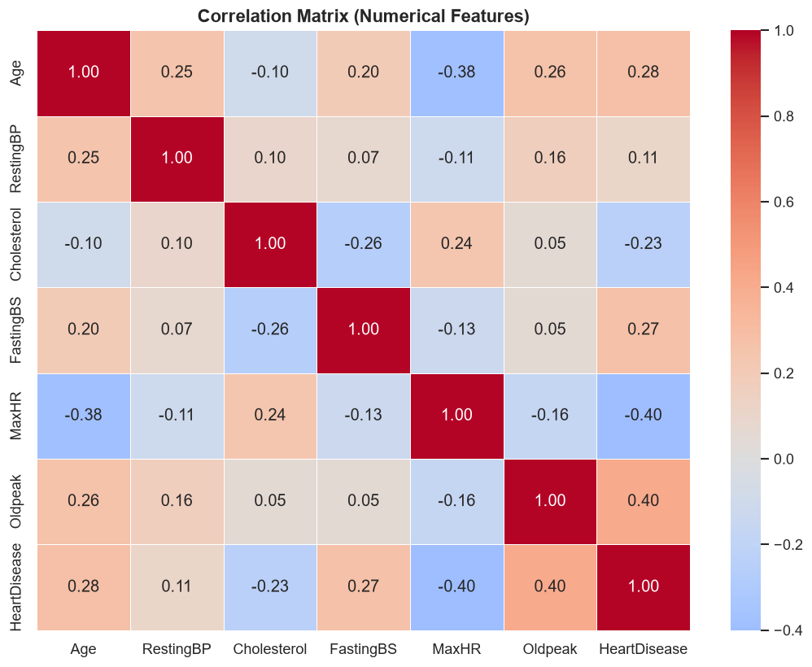
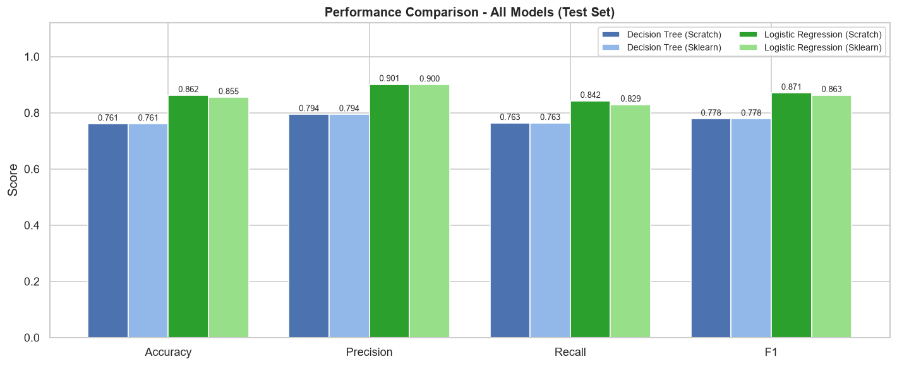
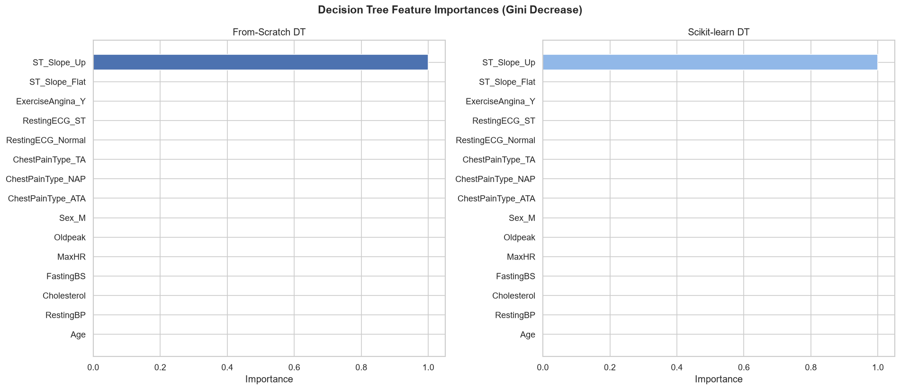

A Decision Tree and a Logistic Regression, both implemented from scratch and compared against scikit-learn
Cardiovascular disease is the leading cause of death worldwide, and a good part of the work of a cardiology clinic is deciding, from a handful of quick measurements, which patients need further tests. We wanted to see how far a simple model can get with only that kind of routine information. The question we set ourselves was:
Can we predict whether a patient has heart disease from basic clinical features, and do models we write ourselves reproduce the results of the established library versions?
This is a supervised binary classification task. The target is HeartDisease (1 means disease present, 0 means absent). Our success criteria are stated before looking at any test results: first, the from-scratch models should match their scikit-learn counterparts on the same data split, with differences we can explain; second, test accuracy should clearly beat the majority-class baseline of about 55%; third, because a missed patient is worse than a false alarm, we also watch recall and not only accuracy.
We picked two algorithms on purpose. A decision tree builds its answer from yes/no questions on single features, which is close to how a clinician reasons. Logistic regression instead combines all features into one weighted score. They fail in different ways, so putting them side by side tells us more about the data than either one would alone. Both are well suited to a small tabular dataset where we want to be able to explain a prediction, which matters in a medical setting.
We used the Heart Failure Prediction Dataset assembled by fedesoriano on Kaggle (kaggle.com/datasets/fedesoriano/heart-failure-prediction). It combines five older heart disease collections (Cleveland, Hungarian, Switzerland, Long Beach VA and Stalog) into one table of 918 patients and 11 predictors plus the target. Patients are aged 28 to 77 (mean 53.5), and 725 of the 918 are male, which is a real limitation we come back to later. We did not redistribute the data in this report; the file heart.csv can be downloaded from the URL above.
The classes are reasonably balanced: 508 patients with disease and 410 without (55.3% and 44.7%). There are no missing values in the usual sense, but the data has a quieter problem described in the next section.
| Feature | Type | Meaning |
|---|---|---|
| Age | numeric | age in years |
| Sex | categorical | M / F |
| ChestPainType | categorical | ASY (none), ATA, NAP, TA |
| RestingBP | numeric | resting blood pressure (mm Hg) |
| Cholesterol | numeric | serum cholesterol (mg/dl) |
| FastingBS | binary | fasting blood sugar above 120 mg/dl |
| RestingECG | categorical | Normal, ST, LVH |
| MaxHR | numeric | maximum heart rate achieved |
| ExerciseAngina | categorical | exercise-induced angina, Y / N |
| Oldpeak | numeric | ST depression during exercise |
| ST_Slope | categorical | slope of the peak exercise ST segment: Up, Flat, Down |

Encoding. The five categorical columns were one-hot encoded with the first level of each variable dropped (drop_first=True). A variable with k levels therefore becomes k − 1 indicator columns. The reason is logistic regression: the indicators of one variable always sum to 1, so keeping all of them makes the columns perfectly collinear and the individual weights hard to interpret. The result is 15 input columns (6 numeric or binary, 9 indicators); the dropped reference levels are female, asymptomatic chest pain (ASY), LVH on the resting ECG, no exercise angina and a down-sloping ST segment. Encoding uses no statistics computed from the data, so it is safe to do before splitting. We will see in Section 7 that this choice matters for the tree.
Splitting. We split once into 70% train (642 patients), 15% validation (138) and 15% test (138), stratified on the target so every part keeps the same class ratio, with random_state = 42. All hyperparameters were chosen on the validation set. The test set was used only once, for the final numbers.
Zeros that are really missing values, and leakage. Cholesterol contains 172 rows equal to 0 and RestingBP contains one. Neither is physiologically possible, so we treated them as missing values coded as zero. The replacement value is a median, and a median is a statistic of the data, so it must not be computed on rows that will later be used for testing. We therefore impute after the split: the median of the non-zero training values (238 mg/dl for cholesterol, 130 mm Hg for blood pressure) is computed on the training set only and then applied unchanged to the validation and test sets. This replaced 113, 25 and 34 cholesterol zeros in train, validation and test, and one blood pressure zero (in validation). Imputing 19% of a column with a constant shrinks its variance and probably hides some signal, but dropping those rows would have cost almost a fifth of an already small dataset.
Standardisation. Logistic regression with gradient descent is sensitive to feature scale, so we standardise its inputs manually: each column j becomes (x − μj)/σj, where μj and σj (population standard deviation) are computed from the training set only and then applied unchanged to the validation and test sets. After the transformation the training columns have mean 0 and standard deviation 1 to machine precision. Trees are invariant to monotone rescaling, so they receive the unscaled data. All from-scratch and scikit-learn models use exactly the same rows.

Model. A binary tree. Each internal node asks one question of the form “is feature j ≤ threshold θ?” and sends the sample left or right. A leaf predicts the majority class of the training samples that reached it.
Objective. For a node with class proportions pk, the Gini impurity is
It is 0 for a pure node and 0.5 for a perfectly mixed two-class node. A candidate split of a node t with n samples into a left child with nL and a right child with nR samples is scored by its Gini gain:
Training. Growth is recursive. At each node we try every feature and, for each, every midpoint between consecutive distinct values as a threshold, and keep the split with the largest ΔG. This exhaustive search is the optimisation procedure; there is no gradient involved. Recursion stops when (i) the node is pure, (ii) it has fewer than min_samples_split samples, (iii) max_depth is reached, or (iv) no split has positive gain. Feature importance is the total sample-weighted Gini decrease contributed by each feature, normalised to sum to 1.
Cost. Our search recomputes the impurity of both children from scratch for every threshold, so a node with n samples and d features costs about O(d n²). Sorting each feature once and sweeping with running class counts would bring that to O(d n log n), which is what scikit-learn does. We kept the simple version because it is easy to read and verify, and we measure the price in Section 6.
Model. The probability of disease is modelled as
and we predict class 1 when p̂ ≥ 0.5, which is the same as z ≥ 0, a linear decision boundary.
Objective. We minimise the binary cross-entropy, which is the negative log-likelihood of the labels under the model. The model is unregularised: there is no penalty term.
Gradients. Because σ′(z) = σ(z)(1 − σ(z)), the chain rule collapses neatly and the gradient is just the prediction error times the inputs:
Training. Starting from w = 0, b = 0, we repeat the updates w ← w − α ∂L/∂w and b ← b − α ∂L/∂b for a fixed 2000 iterations, using the whole training set each time. The loss is convex, so there is a single global minimum and no risk of a bad local one. For numerical safety we clip z to [−500, 500] before exponentiating and clip p̂ to [10−15, 1 − 10−15] before taking logarithms.
Numerical gradient check. Before training, we compared our analytical gradient with a central finite difference, (L(θ + h·ek) − L(θ − h·ek))/2h with h = 10−5, for all 15 weights and the bias, at random non-zero parameters. The largest absolute difference was 9.5×10−12 and the largest relative error 6.4×10−10, so the hand-derived gradient is correct.
Agreement with the libraries. The scratch decision tree and scikit-learn's tree produced identical predictions on all 138 test patients, and identical feature importances. The logistic regression training loss started at exactly ln 2 = 0.6931, as it must when all weights are zero, and decreased steadily (Figure 10). Against scikit-learn run with no penalty, our logistic model agrees on 99.3% of test predictions (137 of 138) and the two weight vectors correlate at 0.988. All of these checks are computed in the notebook.
Everything is evaluated on the same fixed split described in Section 3. For the tree we swept max_depth from 1 to 20 and selected on validation accuracy. For logistic regression we swept the learning rate over {0.001, 0.01, 0.05, 0.1, 0.3, 0.5} with 2000 iterations and selected on validation cross-entropy. The scikit-learn tree was given the same depth (Gini criterion).
The logistic regression is unregularised, so the scikit-learn baseline is run with C = np.inf (no penalty) and a tight tolerance, which makes it minimise exactly the same objective as ours. We report accuracy, precision, recall, F1 and confusion matrices, plus ROC-AUC for the logistic models. Library code was used only for the splitting, the metrics and the baselines, never inside our models; the standardisation is our own.

| Depth | 1 | 2 | 3 | 4 | 5 | 6 | 7 | 8 |
|---|---|---|---|---|---|---|---|---|
| Train accuracy | 0.818 | 0.818 | 0.852 | 0.874 | 0.903 | 0.919 | 0.949 | 0.977 |
| Validation accuracy | 0.848 | 0.848 | 0.812 | 0.819 | 0.819 | 0.804 | 0.783 | 0.768 |
Depths 1 and 2 tie, and the code takes the first maximum, depth 1. The selected tree is therefore a single split with two leaves. Section 7 explains why the encoding pushes the tree in this direction.

| Learning rate | Train loss | Validation cross-entropy | Validation accuracy |
|---|---|---|---|
| 0.001 | 0.4179 | 0.3742 | 0.9275 |
| 0.01 | 0.3439 | 0.2886 | 0.9058 |
| 0.05 | 0.3408 | 0.2916 | 0.8986 |
| 0.1 | 0.3408 | 0.2930 | 0.8986 |
| 0.3 | 0.3408 | 0.2937 | 0.8986 |
| 0.5 | 0.3408 | 0.2937 | 0.8986 |
Learning-rate selection uses validation cross-entropy, and the best learning rate is 0.01. We chose cross-entropy over accuracy because it uses the predicted probabilities and is less noisy than accuracy on 138 validation patients. The two criteria disagree here: accuracy alone would have picked 0.001 (92.8%), but that model is far from converged after 2000 steps (training loss 0.418). The test set was not used in this choice.
| Model | Accuracy | Precision | Recall | F1 | ROC-AUC | Fit time |
|---|---|---|---|---|---|---|
| Decision tree, scratch (depth 1) | 0.761 | 0.795 | 0.763 | 0.779 | – | 18 ms |
| Decision tree, scikit-learn | 0.761 | 0.795 | 0.763 | 0.779 | – | 1 ms |
| Logistic regression, scratch | 0.862 | 0.901 | 0.842 | 0.871 | 0.924 | 148 ms |
| Logistic regression, scikit-learn (C = inf) | 0.855 | 0.900 | 0.829 | 0.863 | 0.918 | 8 ms |


Scratch against library. The two decision trees are indistinguishable: same predictions, same metrics, same importances. This is the strongest evidence that our split search and tree growth are correct. For logistic regression the scratch model is slightly ahead of scikit-learn (86.2% against 85.5%, ROC-AUC 0.924 against 0.918), but the two models disagree on a single test patient out of 138. With a test set this small, the standard error of an accuracy near 86% is about 3 percentage points, so we do not claim that our model is better. The small scratch versus scikit-learn difference is due to fixed-iteration gradient descent versus L-BFGS: our batch gradient descent stops after exactly 2000 steps with a training loss of 0.3439, while scikit-learn's L-BFGS keeps going until its convergence tolerance is met and reaches 0.3408. Both models are unregularised, so regularisation plays no part in the difference.
Tree against logistic regression. Logistic regression is ahead by about 10 points of accuracy (14 patients), with better precision (0.90 against 0.79) and better recall (0.84 against 0.76). A linear boundary is therefore enough for this dataset, and the tree selected on our validation set, a single split, is too simple. The tree's one real advantage is that its rule can be read aloud: “if the exercise ST slope is not upward, predict disease”.
Overfitting. An unrestricted tree (depth 12, 102 leaves) reaches 100% training accuracy but only 77.5% on the test set. The depth-1 tree has 81.8% training and 76.1% test accuracy, so it generalises with almost no gap but is also limited by how little it can express. Interestingly, the unrestricted tree is slightly better on the test set than the selected stump (by two patients), although it was clearly worse on validation. With only 138 patients in each set, two patients is within noise.

ST_Slope_Up.
In the logistic model, on standardised inputs, the largest weights are a rising ST slope (−0.63, lowers risk), non-anginal chest pain (−0.62) and atypical angina (−0.55), both relative to asymptomatic chest pain, then high fasting blood sugar (+0.51), male sex (+0.48), exercise angina (+0.43), a flat ST slope (+0.43) and a higher maximum heart rate (−0.34). Because of drop_first=True, each indicator weight is measured against its dropped reference level, which is why chest pain appears as two negative weights rather than one large positive weight for asymptomatic pain. These findings agree with what is known clinically about exercise ECG findings. Cholesterol and resting blood pressure matter very little, which is partly a side effect of our median imputation.

What the comparison does and does not show. The agreement checks together tell a clear story. The tree matches the library exactly. The logistic regression passes a numerical gradient check to 10−11, agrees with the converged library solution on 137 of 138 test predictions, and has a weight vector that correlates at 0.988 with it. We are therefore confident that the implementations are correct. What we cannot say is that one logistic model is truly more accurate than the other: the gap is one patient, and the difference in training loss (0.3439 against 0.3408) shows it comes from how long gradient descent was run.
The encoding affects the tree but not the linear model. Dropping the first level of each categorical variable removes redundancy for logistic regression, but it changed what the tree can do easily. The most informative chest-pain level, asymptomatic (ASY), is now the all-zero reference and has no column. To isolate those patients a tree needs several splits (not ATA, not NAP, not TA), while it used to need one. Gini gain looks only one split ahead, so it prefers the single strong split on ST_Slope_Up, and deeper trees mostly overfit. With drop_first=True the selected tree is a stump with 76% test accuracy; we did not run the full-encoding alternative in the submitted notebook, so we cannot quantify the difference here. This is not a bug, since the tree still matches scikit-learn exactly, but it is a reminder that the best encoding depends on the model. Using the full encoding for the tree and drop_first=True only for logistic regression would be the natural fix.
Why a tree struggles with this data in general. Because a tree splits on one feature at a time, a smooth relationship such as “risk rises gradually as maximum heart rate falls” has to be approximated by a staircase. A weighted sum handles this naturally. Trees are also unstable: a small change in the training data can change the top split and so the whole structure. An ensemble such as a random forest would probably help, though we did not test this.
Computational cost. Our implementations are 13 to 19 times slower than the library ones (Table 4), which is fine at 642 rows but would not scale. The tree here is cheap only because it has a single split; its search is quadratic in the number of samples per node. The logistic model's cost comes from running a fixed 2000 iterations of plain NumPy code with no convergence-based early exit, while L-BFGS uses curvature information and typically needs far fewer iterations.
Limitations.
Possible improvements. Add a convergence-based stopping rule; use the full one-hot encoding for the tree; implement mini-batch gradient descent as an extension; speed up the tree search with sorting and running counts; use cross-validation and ROC-AUC for model comparison; and try a random forest built from our own tree to study variance reduction.
We implemented a Gini-based decision tree and an unregularised gradient-descent logistic regression from scratch and compared them to scikit-learn on one shared, leakage-free split of 918 patients. The tree matches the library exactly. The logistic regression passes a finite-difference gradient check and matches the library to within one test patient, with the small remaining gap due to fixed-iteration gradient descent against L-BFGS. The learning rate 0.01 was selected on validation cross-entropy. Logistic regression was clearly the better predictor (86% accuracy against 76% for the validation-selected tree), and both models relied mainly on the exercise ST slope. The main lesson for us was less about the winner than about how many small design choices, such as where the imputation is fitted, how categories are encoded and which criterion selects a hyperparameter, change the outcome and have to be checked before a comparison can be trusted.
The environment needs Python 3.10 or newer with numpy, pandas, matplotlib, seaborn, scikit-learn and jupyter. Download heart.csv from the Kaggle URL in Section 2 and place it next to the notebook, then run heart_disease_decision_tree.ipynb from top to bottom. The random seed is fixed to 42 for the splits, the scikit-learn baselines and the gradient check; the from-scratch models are deterministic. The notebook saves the figures used here as PNG files. The cell order is: imports, loading and exploration, one-hot encoding, split with training-only imputation and manual standardisation, the two scratch classes and the gradient check, hyperparameter sweeps, final evaluation, agreement and timing checks, feature analysis and overfitting check. Every number quoted in this report is printed by one of these cells; only the fit times change slightly from run to run. The notebook was run with scikit-learn 1.9.1 (the C = np.inf setting for an unpenalised baseline needs a recent version).
Code and library acknowledgement. NumPy and pandas are used for array work and for the encoding, matplotlib and seaborn for plots, and scikit-learn for train_test_split, the metrics, and the two baseline models. Standardisation is implemented manually. No other external code was used.